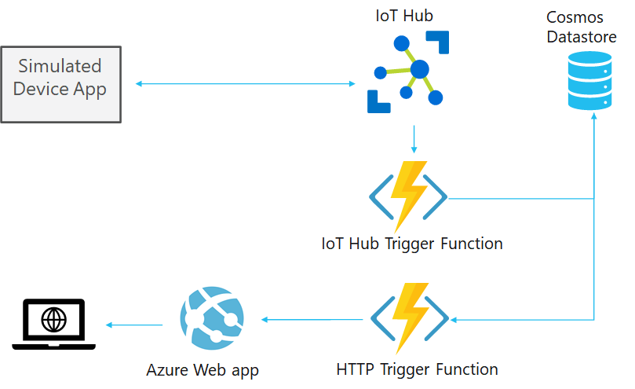
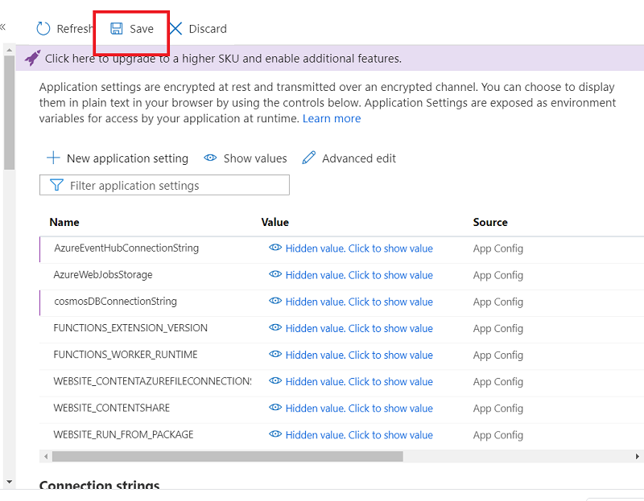
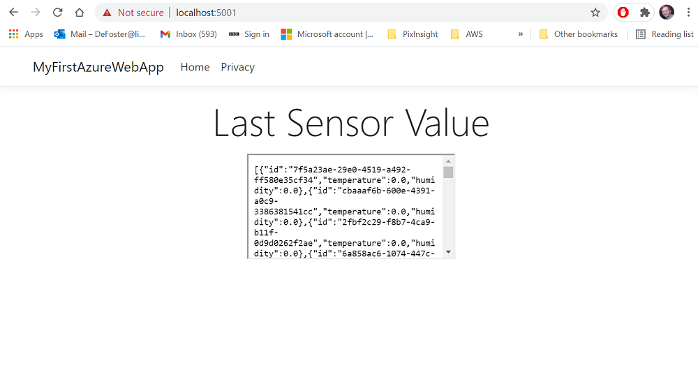

In this week's workshop you will learn how to publish (deploy) all of the services you have developed in previous workshops. You have already created and deployed your IoT Hub and Cosmos database as shown at the top of the image below. This workshop will walk you through how to publish your IoT Hub Trigger function, HTTP Trigger function, and Web App to Azure usnig your Azure for Students subscription.

- As a reminder, last week in workshop 7. you created a Web App. The Web App is the last service you will create for the module and assessment. At this point you should be deciding what type of sensor data you want to simulate with the simulated device app from workshop 2 and how you will connect the rest of your services. Particular attention must be paid to your HTTP Trigger function responses in terms of how you will filter the data using a JSON structure.
In summary, there are no more major cloud services to be created and worked on for the assessment after the web app you created in week 7.
It is worthwhile ensuring your Azure for Students subscription only has the services published deployed that you need before completing the rest of this workshop. At present you only need the below services deployed:
IoT Hub (Workshop 3)
Cosmos Database (Workshop 5)
To ensure this is the case, login to your Azure subscription here and select All Resource to view what is currently deployed.
If you have been following all the workshops precisely, you should see the IoT Hub, Cosmos Database, and storage account(s). However, only the IoT Hub and Cosmos Database are required (see screenshot below).
If you see other services deployed on this page please delete them by selecting the checkbox for each service on the left and then selecting the Delete tab above the list of services on the same page. You can double check you are not deleteing your IoT Hub and Azure Cosmos DB account by looking at the Type column, as this shows you what type of service is deployed.
You should have, of course, completed the workshops for the following services that you have created and tested locally through Visual Studio code; it is the code for these services that you will publish to Azure:
IoT Hub Trigger function (workshop 5)
HTTP Trigger function (workshop 6)
Web App (workshop 7)
Please take note of the resource group name that your IoT Hub or Cosmos DB is deployed to, this is highlighted in yellow in the above screenshot. You need the resource group name as you are going to publish all of your services to this resource group. In the screenshot above the resource group name is temperaturesensor, but you may have named it something else which is fine.
Note Before you attempt this workshop, it is expected that you have completed all previous workshops. If you have not done all, please do them first, then resume with this workshop.
Open your completed code project folder IoTHubTrigger (if you have used same suggested project name in workshops 5) in Visual Studio code (VSC).
The opend project should contanis your IoT Hub Trigger & HTTP Trigger functions from workshops 5 and 6 (you have two functions in one project with the code for both functions in the myIoTHubTrigger.cs file (see the screenshot below)

Note: please update the Microsoft.Azure.WebJobs.Extensions.EventHubs version on your project. To do this, go to IoTHubTrigger.csproj, then set the Microsoft.Azure.WebJobs.Extensions.EventHubs version to 4.3.0. (same as below)
<PackageReference Include="Microsoft.Azure.WebJobs.Extensions.EventHubs" Version="4.3.0" />
Now follow the below steps for creating and publishing a new function app on Azure that contains your IoT Hub Trigger and HTTP Trigger functions.
1. Start to deploy your function app from VSC:
2. If you are asked to sign in the please sign in to yur Azure for Students subscription, you may not have to do this if already signed in:
3. Select 'Create a new Function App in Azure':
4. Give your new function app a name, it cannot be the same as the one in screenshot and must be unique:
5. Select the .NET Core runtime stack (version may vary. You may see .NET Core 6):
6. Select Windows:
7. Select App Service Plan:
8. Create a name for the App Service Plan (please dont use same name used in screenshot):
9. Select the F1 Free pricing tier - this means it was use any of your subscription credits:
10. Select the resource group your function app will be allocated to, remember you should use the resource group name you took note of at the beginning of this workshop:
11. Select 'Create new storage account':

12. Give your new storage account a name, all lowercase with just letters. You cannot use the storage account name below as it must be globally unique:
13. Select 'Skip for now':
14. Select the closest location, you can also select the same location as shown in screenshot:
15. You have now configured all the settings for your funcation app and it will begin deploying to Azure:
16. Eventually you will see the progress of the deployment in the Terminal windows and you can click the ouput window option for more info:
17. When fully deployed you will see the function app has its own web address and also outputs the web address of the HTTP Trigger function. The IoT Hub Trigger does not have an HTTP address as not designed for use in that context:
So you have fully deployed a function app to Azure with your two functions, great! However, there are still a few important configurations steps to do before the functions are operational.
First, go onto the Azure portal and check that your function app and functions have delpoyed:. Go to Home>All Resources then follow the below:
Now return to VSC and open the local.settings.json file as below:
The local.settings.json file contains sensitive credentials that are not sent to Azure as part of the publish process you just walked through. The two application settings that need to be manually copied from the local.settings.json file to your function app on Azure are below:
AzureEventHubConnectionString
cosmosDBConnectionString
You will now add these to your function app on Azure. With both VSC and the Azure portal side by side you will not add the connection strings.
In Azure go to your function app you just created and select the configuration option:
In the screenshot above you can see a bunch of application settings are already present, but you need to add two more from your local.settings.json file from VSC. these settings allow your functions to communicate securely with your IoT Hub and Cosmos database.
The first one to add is for your IoT Hub Trigger function and the application setting will be added with the name of AzureEventHubConnectionString:
In Azure select the 'New application setting' option and a window will pop up requesting a name and value for the new setting:
In VSC, copy the name and value for the AzureEventHubConnectionString: setting in the local.settings.json file and copy them into the Azure settings window (Do not copy the inverted commas, just the values!
You can see the setting has now been added to the list (but not fully saved yet!):
No repeat the 'New application setting' steps for adding the cosmosDBConnectionString name and value to Azure. When you have done this, you should see the two new settings have been added to the list:
Now hit Save and the settings will be saved, this will cause your functions app to be restarted:

At this point your functions should now be running in the cloud, if they were running without issues locally before you published them then everything should now be working.
Frist, test your HTTP Trigger function to ensure it is connecting to your Cosmos database and returning data:
Copy your HTTP Trigger function URL (it will be named differently from below):
Now paste the URL into your browser and everything is working as intended it will fire and connect to your Cosmos database and return JSON data:
With your HTTP Trigger function operating correctly as aboe, you can now test your IoT Hub Trigger function. To do this, run your simulated device app so that sensor values are sent to your IoT hub, the IoT Hub Trigger will fire each time a sensor value is received from the simulatd device app and store it in your IoT Hub. Next, load your HTTP Trigger function again in the browser (as shown in above screenshot) and check that the new sensor data has been stored and retrieved. Hopefully everything is working correctly and you have successfully published your IoT Hub Trigger function and HTTP Trigger function to Azure.
With the functions now published, the last cloud service to publish is the web app from workshop 7. As a reminder the web app you created and tested locally is below:

Next, open VSC and load the folder that contains your web app from workshop 7:
Open the index.cshtml file and replace the iframe src URL with the URL of your HTTP Trigger function. You were shown how to get the URL of your HTTP Trigger earlier in this workshop.
Next, to deploy your web app using the VSC Azure Tools extension:
In ViSCe, open the Command Palette, Ctrl+Shift+P.
Search for and select "Azure App Service: Deploy to Web App".
Respond to the prompts as follows:
Select MyFirstAzureWebApp as the folder to deploy or select the name of the folder your web app is in/
Select Add Config when prompted.
If prompted, sign in to your existing Azure account.
Select your Azxure Subscription if prompted.
Select Create new Web App... Advanced.
For Enter a globally unique name, use a name that's unique across all of Azure (valid characters are a-z, 0-9, and -). A good pattern is to use a combination of your company name and an app identifier.
Select the resourcer group from the list that you created previously, the same one your IoT hub is deployed to.
When prompted to Select a runtime stack:
For .NET Core 3.1, select .NET Core 3.1 (LTS)
Select the Windows operating system
Select the F1 (free) App Service plan, that appears in the list (you created this earlier in the workshop), you should not need to create another one
Select Skip for now for the Application Insights resource.
Your web app will now begin to be deployed and published to Azure.. The below message may also pop up on bottom right of VSC, click Yes for this:

You can check your Web App has been published and browse it from VSC. Follow the screenshot below by right-clicking on the globe icon for your published website and selecting browse:
Your web app should be fully published!
You can easily make changs to your web app and publish them quickly. For example, open the index.cshtml file in VSC and change the text that says 'Last Sensor Value' to 'First Sensor Value' and save (File>Save) the page:

Now select the Azure options from the side panel in VSC and right-click your web app and select 'Deploy to Web App'. This will overwrite your existnig web app code on Azure and include any changes you have made. When deployed, right-click your web app and select browse and you should see the text has been updated:
That is all the tasks for this week, please use your time to ensure you fully understand the concepts presented and start making progress on your assessment work.